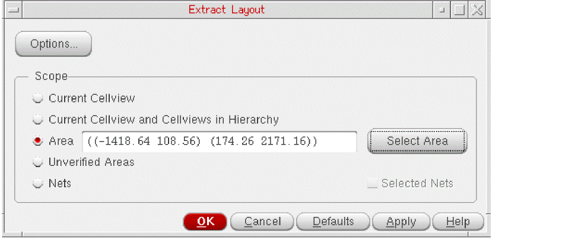

Extracting Connectivity by Area
You can limit the extraction to a specified area of the design. The results are the same as those derived from a full batch extraction, but the process is often faster for small areas because the extraction is limited to the shapes enclosed by and overlapping the specified area.
To extract connectivity for a specified area,
-
From the CIW, open a layout cellview and choose Connectivity – Extract Layout.
The Extract Layout Form form is displayed. -
Set the Scope to Area to enable the area extraction controls.
 - Type the coordinates of the area to be extracted in the text field or click Select Area and draw the area you require in the canvas.
- Click OK or Apply to extract connectivity for the specified area.
Area Extraction Examples
Example 1 shows connectivity propagated to all the connected shapes enclosed by or overlapping the specified area.
Example 2 shows connectivity removed from the unconnected shapes enclosed by or overlapping the specified area.
Example 3 shows connectivity propagated to the connected shapes outside the specified area.
Example 4 shows markers created for violations on the objects enclosed by or overlapping the specified area.
Example 5 shows markers created outside the specified area because connectivity was updated for overlapping shapes.
Example 6 shows open markers created between all the unconnected shapes on a given net regardless of whether the shapes overlap the specified area.
Related Topics
Return to top